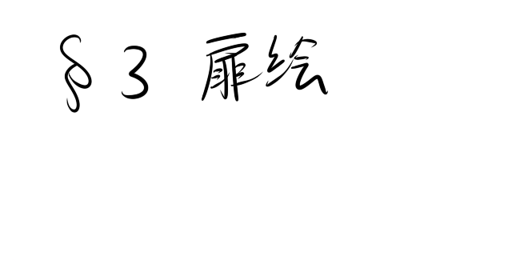

六月。雨の多い季節だが、この頃はまだ梅雨前線も九州の南端あたりまでしか来ておらず、いずれ来る夏を感じさせる強い日差しが連日降り注いでいた。
「えっとそういうことで、六組のシンボルは虎ってことになりました」
数名の体育委員が自信ありげに決定事項を黒板に書いていく。ホームルーム中の講堂ではおお、とかえー虎かよ。とか様々な反応がしきりに反響している。
「虎って、描きにくいよな」
後ろに座っていた佐竹がぼそりとつぶやいた。
「虎とかじゃなくてもっと簡単な、カラスとかウニとかだったら良かったのに。そう思わんか、藤白」
「カラスやウニだったらなんか弱そうじゃないですか……」
「いいだろ弱くても。どうせ体育大会なんて一部のスポーツが得意なヤツらのお祭りなんだから」
そう体育大会。
このホームルームは、間近に迫った体育大会に関するものだった。議題はグラウンドに掲げられる看板の絵。その辺の学校によくある話としてこういうものは３クラスの生徒達による投票、つまり直接民主的に決定される。
なぜ３クラスなのか。１クラスではないのか。それは党立真揺高校の体育大会は、３クラスで１チームだからだ。
つまりこういうこである。党立真揺高校の体育委員は通常、“縦に”チーム分けがなされる。一年一組から三年一組までの３クラスで１チーム。一年二組から三年二組までの３クラスでまた１チーム。という具合である。そんなわけなのでクラスのシンボル決めを直接民主的に行おうとすれば必然、３クラスが一同に会するだけの広い教室、すなわちここのような講堂で行うことになる。
「しっかし面倒くさいなあ、体育大会。藤白もそう思わねえか？」
この佐竹は身体が大きいのにも関わらず運動があまり得意ではないらしい。では勉強ができるのかと言えばそうでもなく、何の得意分野もない典型的なダメ人間であることを藤白は知っている。
「俺は……そうでもないですかね」
「いいよなあ。お前は運動も勉強もそこそこにできるんだから」
「いや、別にそういうわけじゃ」
「なんだよなんだよ。お前も去年までは同じように嫌がってたっていうのに。今年はどうしたんだ？」
そう。藤白は彼ほど露骨に嫌ってはいないというだけで、体育大会が別段好きというわけではない。だが今年の体育大会は違った。その理由は体育大会のチーム分けにある。なぜなら藤白貴和のクラスは２－６。そして青山希海のクラスも３－６なのだ。つまり……。
「あっ、お前ひょっとしてアレか？ 青山さんと一緒に参加できるから」
むせた。
「ちょ、ちょっと先輩、やめてくださいよこんな人が多い中で……！」
「否定はしないんだな……」
少し呆れたような表情を見せる佐竹。
「まあでも」
そう言って佐竹は壇上に立った数名の体育委員の内の一人に視線をやる。そこには校則違反間違いなしの明るい髪色の少女が立っていた。
「青山さん、スポーツもそこそこにできるんだよなあ。勉強だって得意だし、マジで完璧って感じだよ。そりゃお前が惚れるのもわかる。おまけに可愛いしな。でも紀佳ちゃんを放っておくのはいただけん」
「だ、だから先輩！ ていうか紀佳のことは別にいいじゃないですか！」
左前方を見ると遠くの方に紀佳が座っている。この距離だとこちらの話が聞こえている心配はないだろうが、内容が内容なのでどうしても意識してしまう藤白だった。
「そういやお前、青山さんとはどうなの？」
「どうって……別に普通ですよ」
「普通ってなんだよ普通って！ 普通に付き合ってますってか！？」
「だ、だから声が大きいですって！」
「え、嘘。マジで……」
「いやだからそれも違います！ 青山先輩とは……単に友達ですよ」
「いかんなあお前、もう知り合って二ヶ月ほど経ってるんだろ？ そろそろ行っちまってもいい頃合いだと思うぞ？」
「行くってどこにですか……」
「どこってそりゃお前……」
はぁ、と大きくため息をつく佐竹。
「まったくお前は相変わらずボサッとしてるな。そんなんだといつまでたっても彼氏から青山さんを奪えんぞ」
彼氏。その言葉に心臓がドキリと音を立てる。
そういえば以前に佐竹が言っていた。希海は男と付き合っている、と。だが、藤白がこうして二ヶ月間、精神医療センターでの活動を通じて一緒に居てみても、そんな男の影など少しも見えなかった。
「ていうか先輩、その、青山先輩に彼氏が居るって話本当なんですか……？」
「何、俺を疑ってるのか！？」
「端的に言えばそうです」
「お前……なかなか言ってくれるな。や、まあ正直なところは俺も分からん」
「なんですかそれ」
「俺がその話を聞いたのも随分と前だしな、ひょっとした今はもう別れてるのかも。って、藤白。もしそうならお前、今すっげーチャンスだぞ」
「チャンスって……」
「いいから行っちまえ、あっ、行くっていうのは告白するってことな。何なら俺がサポートするからさ、ほら」
「なっ、こ、告白！？」
仮に自分が希海に告白をするとして、佐竹がそれをどうサポートするというのか。考えれば考える程できることなど無いような気がするが、この男は一体何を考えているのだろう。
「そうだな……じゃあこういうのはどうだ。プランＡ。俺が青山さんを屋上に呼び出すから、お前がそこで……」
「却下です」
「な、何でだよ！」
「俺は別にそういうつもりで青山先輩に近づいたわけじゃないって前も言いましたよね。それになんですかその呼び出すって。それくらい自分でしますよ」
「う、ううん。そう言われると確かに。じゃあこういうのはどうだ。プランＢ、デートで親密度アップ計画！」
頭が痛くなった。どうしてこの男はこうも自分と希海をくっつけようとするのだろう。世話焼きなのか面白がってるだけなのか。どちらにせよ迷惑極まりないのは確かだが。
「うーん……」
でもデートというのは魅力的かもしれない。自分が希海と会うときはいつも紀佳とセットだったから、たまには二人きりでどこかへ行ってみたい。
「おっ、乗り気になってきたか」
佐竹が机から身を乗り出して目を輝かせる。
「まあ、多少は」
そうだ。二人きりじゃないとできない話だってあるのだから、そういう機会を設けるのはいいことだと藤白も思う。二人きりじゃなければできない話。たとえば彼氏のこととか、……あの日の涙のこととか。
「よし、じゃあそうと決まったら早速今週の土曜にでも誘え！」
「ええっ！？」
「いいじゃねえか。善は急げだ。こういうのは思いついたときにサッと行動に移しちまわないとどんどん気力が萎えていくからな」
「そ、それは確かにそうですけど、でも何というか……」
「何というか？」
「口実がないと誘いにくいですよ……」
「なるほど、口実か」
佐竹は腕を組んでうんうんと納得した様子を見せてみると、やがて何かを思いついたように、
「そうだなあ。じゃあ、こういうのはどうだ？ 俺がお前と青山さんを遊びに誘う。そんでもって当日急用ができたと行ってドタキャンするんだ。これなら合法的にお前らが二人きりになれるだろ」
普通に希海と二人きりになるのは非合法なのか。そんな突っ込みが藤白の頭をかすめたが、なるほど、確かにそれなら自分が口実を用意しなくても良い。
「いいですね。じゃあそれでいきましょう」
「おうじゃあ、そういうことで話を詰めていこうか……」
そして佐竹と藤白は大まかなデートプランを練った。
昼前に集合して、一緒にランチ。店はどこか適当なイタリアンを予約しておく。そして電車で中央駅に行き、そこで買い物をするか映画を見て時間を潰す。そして夕方には沈みゆく夕日を見ながらＳＴＥＰ５の観覧車で告白（ここは藤白が強く否定したのだが佐竹が言って聞かなかった）。そしてあわよくばそのままラブ（同じく藤白が強く否定したのだが略）
「よしじゃあこんなもんでいいだろ」
「まあ最後の方がアレでしたが、概ねこれでいいと思います」
「本当かあ……？」
「な、なんですか急に」
「いや、このプランで本当に二人の仲が親密になるのかと思ってな。何かもう一つポイントが足りない気がするな」
「足りないポイント……」
「そう。言ってしまえばイベントだ」
「イベントなら買い物とか色々あるじゃないですか」
「いや、そういうじゃなくてもっと突発的な……そうだ！ こんなのはどうだ。俺がな……」
そして佐竹が説明し始めた話は驚愕のものだった。
曰く、このプランにはハプニングがない。ならば自分がそのハプニングを引き起こしてやろうではないか。それはどんなハプニングか。簡単だ。二人が不良に絡まれて、それを藤白が撃退する。そうすれば希海も頼りになる藤白にキュンと来る……という筋書きだ。そしてその不良役をやるのは……佐竹だ。
「またそんな古典的な……」
「いいからいいから。お前だって希海にかっこいいところ見せたいだろ？」
「う……」
確かに。
目下希海には色々と教えられっぱなしだ。特に精神医療センターでの活動では色々と情けない姿を晒してしまっている一方でそういうシチュエーションに憧れがないと言えば嘘になる。自分が希海を守ったりなんてことは夢のまた夢だ。しかし現実では……
（そっか現実での先輩は、普通の女の子なんだ……）
ということは自分が活躍して彼女を守るようなことだって十分に可能だ。ならば――
「わかりました。やりましょう」
「おっ、いいねえ。いつになく乗り気じゃないか藤白」
「まあ俺だってかっこいいところ見せたいですよ」
「うんうん、そうだよなあ。じゃあ具体的にはだな……」
そうして二人の悪巧みは進んでいく。
講堂の壇上では、体育委員の希海が『なに私語してんのよ』と言わんばかりの目つきでこちらを睨んでいた。